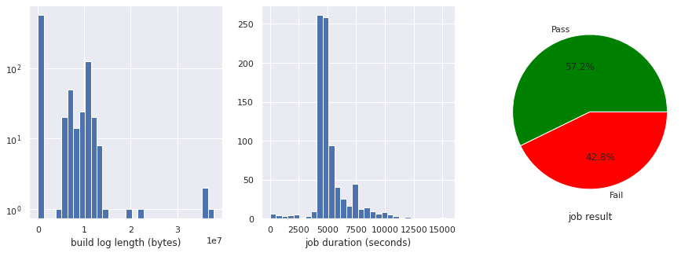

======= AI4CI : AI for Continuous Integration >>>>>>> 7e7fb73... Update documentation Getting started Get Started Contribute to the AI for Continuous Integration Project Table of Contents <<<<<<< HEAD ======= >>>>>>> 7e7fb73... Update documentation Failure type classifier Failure type classification with the TestGrid data Flake Detection for TestGrid Failure type classification Failure type functions <<<<<<< HEAD ======= >>>>>>> 7e7fb73... Update documentation Time to merge prediction Time to Merge Prediction <<<<<<< HEAD Predicting Time to Merge of a Pull Request Time to Merge Prediction Inference Service ======= >>>>>>> 7e7fb73... Update documentation Build Log Classifier openshift-ci: build logs initial data collection and EDA Term frequency analysis of build logs Seldon deployment for build log clustering Prow Logs and GCS Data <<<<<<< HEAD ======= >>>>>>> 7e7fb73... Update documentation TestGrid data TestGrid: initial EDA and data collection TestGrid In-Depth EDA TestGrid: exploring in-depth metadata TestGrid Additional Features - uniform or unique? KPI Metrics Quantify Flakes Quantify Build Pass/Failure Correlated test failure sets per test and average size of correlation sets Tests Blocked and Timed Out Tests Percent of Failing Tests Fixed Persistent Failures Analysis Probability To Fail Quantify test pass/failures Quantify Time to Test Time to Fail Validate the succesful running of the Automated Pipeline Fetch test grid data {Metric name} KPI Metrics Visualization <<<<<<< HEAD ======= >>>>>>> 7e7fb73... Update documentation Bugzilla Data Bugzilla Data for CI Tests on Testgrid <<<<<<< HEAD Github Repo PR data GitHub Data for OpenShift Origins ======= >>>>>>> 7e7fb73... Update documentation Sippy data Sippy Export of OpenShift Data - EDA SIPPY Initial EDA <<<<<<< HEAD ======= >>>>>>> 7e7fb73... Update documentation Telemetry data Telemetry Data for CI Clusters <<<<<<< HEAD
>>>>>>> 7e7fb73... Update documentation Getting started
=======
>>>>>>> 7e7fb73... Update documentation Failure type classifier
>>>>>>> 7e7fb73... Update documentation Time to merge prediction
>>>>>>> 7e7fb73... Update documentation Build Log Classifier
>>>>>>> 7e7fb73... Update documentation TestGrid data
>>>>>>> 7e7fb73... Update documentation Bugzilla Data
Github Repo PR data
>>>>>>> 7e7fb73... Update documentation Sippy data
>>>>>>> 7e7fb73... Update documentation Telemetry data
Workshop
Automated log analysis normally relies on some treats that typical logs exhibit:
Similar messages are repeated over and over.
Messages are short, and contain mixed text and parameters.
Log files contain some structure (time stamps, severity levels, system/component identifiers) as well as free form textual data.
Log files from OpenShift CI do not always have these characteristics. A single log file can contain a wide diverstity of log entries, some of which can be long multi-line sequences (e.g. command output) and do not always have the same structure. Moreover, the content type, structure and format varies between jobs, even between executions of the same job over time.
On the other hand, CI logs offer other characteristics that traditional logs often don’t:
Diversity of content (as explained above).
They have a beginning and and end.
We have repetitions at a whole log file level. I.e. the same job runs multiple times, which enables us to compare multiple versions of the same log file (in contrast with traditional log analysis, which can exploit multiple occurrences only at the log entry level).
Different jobs in OpenShif CI provide different log files and outputs, but there is one specific log output that they all have in common: the job’s build log (build-log.txt). We start the log exploration with this type of log.
build-log.txt
We start by accessing job log data. Initially we will get:
Build logs (build-log.txt) for jobs
Basic metadata about each build log:
Size (lenght) of the build log file
Duration of the job run
The result of the job, i.e. wether the log corresponds to a failed or passed execution
All that information is available in a Google Storage bucket called openshift-ci. Within that bucket, each CI job definition has matching prefixes for its generated artifacts.
openshift-ci
For example, all the builds for the job release-openshift-ocp-installer-e2e-aws-serial-4.7 have the form:
release-openshift-ocp-installer-e2e-aws-serial-4.7
/logs/release-openshift-ocp-installer-e2e-aws-serial-4.7/BUILD_ID/
and right after that prefix we will always find 3 blobs that will provide us the information we need:
build-log.txt, the build log itself
started.json with the start’s timestamp
started.json
finished.json (after the job has fininshed) contains the end timestamp and the job result (success, failure, or error)
finished.json
You can see an example build of that job here.
Beyond that common information, each job type will have their own set of job-specific artifacts available under the artifacts/ infix. This notebook does not explore job-specific logs or artifacts.
artifacts/
import json import matplotlib.pyplot as plt import pandas as pd import os import seaborn as sns <<<<<<< HEAD from google.cloud import storage ======= from google.cloud import storage >>>>>>> 7e7fb73... Update documentation pd.options.display.float_format = "{:.2f}".format sns.set()
The following class contains the logic for obtaining the logs and metadata that we are interested in:
# Getting infortation about all builds from the job # TODO: add an option to limit the number of builds to work with class Builds: # To fetch build metadata without downloading a copy of the log files # create an instance with refresh=False and call fetch_build_data project = "origin-ci-test" # The Google Storage bucket logs_path = "../../../../data/raw/gcs/build-logs/" # Where to save log files metadata_path = "../../../../data/raw/gcs/build-metadata/" # Where to save metadata @staticmethod def log_path_for(build_id): <<<<<<< HEAD return os.path.join(Builds.logs_path, f"{build_id}.txt") def __init__(self, job_name, refresh=False): ======= return os.path.join(Builds.logs_path, f"{build_id}.txt") def __init__(self, job_name, refresh=False): >>>>>>> 7e7fb73... Update documentation self.job_name = job_name self.prefixes = set() self.latest_build_id = "" self.df = None self.refresh = refresh self.cache_file_name = os.path.join( <<<<<<< HEAD self.metadata_path, f"{job_name}_build-logs.csv" ======= self.metadata_path, f"{job_name}_build-logs.csv" >>>>>>> 7e7fb73... Update documentation ) # Note: it's important that the job prefix ends in '/' as this is used as a # prefix for google storage client's list_blobs with '/' as the delimiter # FIXME: this prefix only works for periodics. Generalize to include pre/post-submit job types <<<<<<< HEAD self.job_prefix = f"logs/{job_name}/" ======= self.job_prefix = f"logs/{job_name}/" >>>>>>> 7e7fb73... Update documentation # Google storage client self.client = storage.client.Client.create_anonymous_client() self.bucket = self.client.bucket(self.project) def prow_url_for(self, build_id): <<<<<<< HEAD return f"https://prow.ci.openshift.org/view/gcs/{self.project}/{self.job_prefix}{build_id}" def build_log_url_for(self, build_id): """Returns a public URL to download a build's build-log.txt""" blob = self.bucket.get_blob(f"{self.job_prefix}{build_id}/build-log.txt") ======= return f"https://prow.ci.openshift.org/view/gcs/{self.project}/{self.job_prefix}{build_id}" def build_log_url_for(self, build_id): """Returns a public URL to download a build's build-log.txt""" blob = self.bucket.get_blob(f"{self.job_prefix}{build_id}/build-log.txt") >>>>>>> 7e7fb73... Update documentation return blob.public_url # from https://github.com/googleapis/google-cloud-python/issues/920 def _fetch_build_prefixes(self): iterator = self.client.list_blobs( self.bucket, prefix=self.job_prefix, delimiter="/" ) for page in iterator.pages: self.prefixes.update(page.prefixes) def fetch_build_data(self): """Downloads build log information from google storage. If "refresh" is set, it dowloads and saves a copy of the log file itself. Otherwise, it just gets the metadata. This method does not save metadata to a local file""" self.df = pd.DataFrame(columns=["result", "size", "start", "end"]) print("Fetching information about builds of", self.job_name) if not self.prefixes: self._fetch_build_prefixes() num_builds = len(self.prefixes) for i, prefix in enumerate(self.prefixes, start=1): build_id = prefix.split("/")[-2] <<<<<<< HEAD print(f"({i}/{num_builds}) {build_id}", end="\r") blob = self.bucket.get_blob(f"{prefix}finished.json") ======= print(f"({i}/{num_builds}) {build_id}", end="\r") blob = self.bucket.get_blob(f"{prefix}finished.json") >>>>>>> 7e7fb73... Update documentation if not blob: # Build has not finished yet continue finished = json.loads(blob.download_as_bytes()) <<<<<<< HEAD blob = self.bucket.get_blob(f"{prefix}started.json") started = json.loads(blob.download_as_bytes()) blob = self.bucket.get_blob(f"{prefix}build-log.txt") ======= blob = self.bucket.get_blob(f"{prefix}started.json") if not blob: # Build has not started yet continue started = json.loads(blob.download_as_bytes()) blob = self.bucket.get_blob(f"{prefix}build-log.txt") >>>>>>> 7e7fb73... Update documentation if blob: length = blob.size path = Builds.log_path_for(build_id) if self.refresh and not os.path.exists(path): # Save a copy of the log itself, unless we already have it blob.download_to_filename(path) else: length = 0 row = { "result": finished["result"], "size": length, "start": started["timestamp"], "end": finished["timestamp"], } self.df = self.df.append(pd.DataFrame(row, index=[build_id])) if build_id > self.latest_build_id: self.latest_build_id = build_id print("Latest build is", self.latest_build_id) def save_metadata(self, overwrite=False): """Saves a copy of the metadata to a local CSV file""" if os.path.exists(self.cache_file_name) and not overwrite: <<<<<<< HEAD print(f"{self.cache_file_name} already exists") ======= print(f"{self.cache_file_name} already exists") >>>>>>> 7e7fb73... Update documentation print("Use overwrite=True to overwrite") return if not self.have_metadata(): # We don't have anything to save yet, fetch it self.fetch_build_data() <<<<<<< HEAD print(f"Saving build data to {self.cache_file_name}") ======= print(f"Saving build data to {self.cache_file_name}") >>>>>>> 7e7fb73... Update documentation self.df.to_csv(self.cache_file_name) def load_metadata(self): """Loads the metadata DataFrame from a local CSV file""" <<<<<<< HEAD print(f"Loading build data from {self.cache_file_name}") ======= print(f"Loading build data from {self.cache_file_name}") >>>>>>> 7e7fb73... Update documentation self.df = pd.read_csv(self.cache_file_name, index_col=0) self.latest_build_id = self.df.index.max() def have_metadata(self): return self.df is not None and not self.df.empty def get_metadata(self): """Returns a DataFrame with build metadata, loading it from a previous save or downloading it from google cloud""" if not self.have_metadata(): if self.refresh: self.fetch_build_data() else: self.load_metadata() return self.df
Let’s pick a specific job to work with.
NOTE: pick only a periodic job for now. pre/post-submit jobs are not much different, but the code so far assumes a /logs prefix, and pre/post-submit jobs use e.g. /pr-logs.
/logs
/pr-logs
job_name = "periodic-ci-openshift-release-master-ci-4.8-e2e-gcp"
There are 3 options to load the information about job builds:
Download everything (metadata and log files) from google cloud storage.
Download the metadata but do not dowload the logs themselves.
Load metadata from a local CSV file that has been created on a previous download.
The local copy of the metadata can be saved by calling save_metadata. NOTE: any existing metadata copy will not be overwritten by defaut; call with overwrite=True to replace the existing cache.
save_metadata
overwrite=True
# Option 1: Refresh (re-download) all data, including log files: # builds = Builds(job_name, refresh=True) # builds.save_metadata(overwrite=True) # Option 2: Get fresh build metadata without downloading a copy of the logs # builds = Builds(job_name, refresh=False) # builds.fetch_build_data() # builds.save_metadata(overwrite=True) # Option 3: Load [cached] build information builds = Builds(job_name)
Let’s get all the metadata (result, duration, build-log length) of all builds of that job.
Note that if we set refresh=True above this will also download a copy of each build log locally.
refresh=True
df = builds.get_metadata() # Remove builds that simply erroed build_errors = df[df["result"] == "error"].index df.drop(build_errors, inplace=True) # From timestamps to job duration df["duration"] = df["end"] - df["start"] del df["start"] del df["end"] # A boolean version of the result df["success"] = df["result"] == "SUCCESS" del df["result"] df
Loading build data from ../../../../data/raw/gcs/build-metadata/periodic-ci-openshift-release-master-ci-4.8-e2e-gcp_build-logs.csv
837 rows × 3 columns
print(f"success: {df.success.sum()} PASS and {(~df.success).sum()} FAIL") ======= Overview of the metadata# print(f"success: {df.success.sum()} PASS and {(~df.success).sum()} FAIL") >>>>>>> 7e7fb73... Update documentation df.describe() success: 479 PASS and 358 FAIL size duration count 837.00 837.00 mean 3223683.72 5214.82 std 5112869.50 1558.29 min 92.00 4.00 25% 3872.00 4460.00 50% 9883.00 4785.00 75% 7329272.00 5436.00 max 37896258.00 15294.00 And a graphical overview of the distributions: fig, axs = plt.subplots(1, 3, figsize=(15, 5)) axs[0].hist(df["size"], log=True, bins=30) axs[0].set_xlabel("build log length (bytes)") axs[1].hist(df["duration"], bins=30) axs[1].set_xlabel("job duration (seconds)") results = [df.success.sum(), (~df.success).sum()] axs[2].pie(results, autopct="%1.1f%%", labels=["Pass", "Fail"], colors=["green", "red"]) axs[2].set_xlabel("job result") plt.show()  We can see that the build log sizes go from very short (a few bytes log) to quite long (a few megabytes). By looking at the median (50%) we see that most of them stay on the relatively small side, but the ones that get log do get significantly bigger. Note that the axis for log lenght are in a logarithmic scale, to better accomodate this. We will find out why by looking at the relationship between the features: plt.plot("size", "duration", "go", data=df[df.success], alpha=0.1, label="Pass") plt.plot("size", "duration", "ro", data=df[~df.success], alpha=0.1, label="Fail") plt.xscale("log") plt.xlabel("build-log size (bytes)") plt.ylabel("duration (seconds)") plt.legend() plt.show() Here we can notice a few interesting things:
print(f"success: {df.success.sum()} PASS and {(~df.success).sum()} FAIL") >>>>>>> 7e7fb73... Update documentation df.describe()
success: 479 PASS and 358 FAIL
And a graphical overview of the distributions:
fig, axs = plt.subplots(1, 3, figsize=(15, 5)) axs[0].hist(df["size"], log=True, bins=30) axs[0].set_xlabel("build log length (bytes)") axs[1].hist(df["duration"], bins=30) axs[1].set_xlabel("job duration (seconds)") results = [df.success.sum(), (~df.success).sum()] axs[2].pie(results, autopct="%1.1f%%", labels=["Pass", "Fail"], colors=["green", "red"]) axs[2].set_xlabel("job result") plt.show()
We can see that the build log sizes go from very short (a few bytes log) to quite long (a few megabytes). By looking at the median (50%) we see that most of them stay on the relatively small side, but the ones that get log do get significantly bigger. Note that the axis for log lenght are in a logarithmic scale, to better accomodate this.
We will find out why by looking at the relationship between the features:
plt.plot("size", "duration", "go", data=df[df.success], alpha=0.1, label="Pass") plt.plot("size", "duration", "ro", data=df[~df.success], alpha=0.1, label="Fail") plt.xscale("log") plt.xlabel("build-log size (bytes)") plt.ylabel("duration (seconds)") plt.legend() plt.show()
Here we can notice a few interesting things:
There is a strong correlation between a build’s build-log size and its result.
build-log
Successful job runs have a very consistent build log length.
A build’s duration also has a relationship with the results: a duration under a certain threshold indicates a failure before tests could start, e.g. install or infrastructure issues.
All in all, we can appreciate that it seems to be quite possible to classify build results based on their log size and duration.
Now let’s take a look at the contents of the build logs.
This is the beginning of the latest build’s build-log.txt:
print("Build URL:", builds.prow_url_for(builds.latest_build_id), "\n") path = Builds.log_path_for(builds.latest_build_id) with open(path) as f: lines = f.readlines(2000) for line in lines: print(line, end="")
Build URL: https://prow.ci.openshift.org/view/gcs/origin-ci-test/logs/periodic-ci-openshift-release-master-ci-4.8-e2e-gcp/1387498929158885376 INFO[2021-04-28T20:08:36Z] ci-operator version v20210428-04f6984 INFO[2021-04-28T20:08:36Z] Loading configuration from https://config.ci.openshift.org for openshift/release@master [ci-4.8] INFO[2021-04-28T20:08:37Z] Resolved SHA missing for master in https://github.com/openshift/release (will prevent caching) INFO[2021-04-28T20:08:37Z] Resolved release initial to registry.ci.openshift.org/ocp/release:4.8.0-0.ci-2021-04-27-075557 INFO[2021-04-28T20:08:37Z] Using explicitly provided pull-spec for release latest (registry.ci.openshift.org/ocp/release:4.8.0-0.ci-2021-04-28-200224) INFO[2021-04-28T20:08:37Z] Using namespace https://console.build01.ci.openshift.org/k8s/cluster/projects/ci-op-ptfyqcy5 INFO[2021-04-28T20:08:37Z] Running [input:origin-centos-8], [input:ocp-4.5-upi-installer], [release:latest], [images], e2e-gcp INFO[2021-04-28T20:08:38Z] Tagging ocp/4.5:upi-installer into pipeline:ocp-4.5-upi-installer. INFO[2021-04-28T20:08:38Z] Tagging origin/centos:8 into pipeline:origin-centos-8. INFO[2021-04-28T20:08:38Z] Importing release image latest. INFO[2021-04-28T20:11:42Z] Imported release 4.8.0-0.ci-2021-04-28-200224 created at 2021-04-28 20:04:24 +0000 UTC with 140 images to tag release:latest INFO[2021-04-28T20:11:42Z] Acquiring leases for test e2e-gcp INFO[2021-04-28T20:11:42Z] Running multi-stage test e2e-gcp INFO[2021-04-28T20:11:42Z] Running step e2e-gcp-ipi-conf. INFO[2021-04-28T20:11:52Z] Step e2e-gcp-ipi-conf succeeded after 10s. INFO[2021-04-28T20:11:52Z] Running step e2e-gcp-ipi-conf-gcp. INFO[2021-04-28T20:12:02Z] Step e2e-gcp-ipi-conf-gcp succeeded after 10s. INFO[2021-04-28T20:12:02Z] Running step e2e-gcp-ipi-install-monitoringpvc. INFO[2021-04-28T20:12:12Z] Step e2e-gcp-ipi-install-monitoringpvc succeeded after 10s.
NOTE: pretty output with colored log level is a recent addition as of this writing (PR 1836, merged 2021-04-05). This change altered the formatting of all build logs (from the change onwards, of course; previous builds’ logs have a different format). May this serve as an example of the type of diversity and unexpected output we need to handle.
When we looked at the metadata, we saw that all the successful builds have a similar lenght. Let’s look at one of them:
sample_pass = df[df.success].sample(random_state=1).index.item() print("Full log of a successful build: ", sample_pass) print("Build URL:", builds.prow_url_for(sample_pass)) print("Raw log URL:", builds.build_log_url_for(sample_pass), "\n") path = Builds.log_path_for(sample_pass) with open(path) as f: lines = f.readlines() for line in lines: print(line, end="")
Full log of a successful build: 1378441280396201984 Build URL: https://prow.ci.openshift.org/view/gcs/origin-ci-test/logs/periodic-ci-openshift-release-master-ci-4.8-e2e-gcp/1378441280396201984 Raw log URL: https://storage.googleapis.com/origin-ci-test/logs/periodic-ci-openshift-release-master-ci-4.8-e2e-gcp/1378441280396201984/build-log.txt time="2021-04-03T20:16:31Z" level=info msg="ci-operator version v20210402-7d9fcd2" time="2021-04-03T20:16:31Z" level=info msg="Loading configuration from https://config.ci.openshift.org for openshift/release@master [ci-4.8]" time="2021-04-03T20:16:31Z" level=info msg="Resolved source https://github.com/openshift/release to master@" time="2021-04-03T20:16:31Z" level=info msg="Resolved release initial to registry.ci.openshift.org/ocp/release:4.8.0-0.ci-2021-04-02-173758" time="2021-04-03T20:16:31Z" level=info msg="Using explicitly provided pull-spec for release latest (registry.ci.openshift.org/ocp/release:4.8.0-0.ci-2021-04-03-201542)" time="2021-04-03T20:16:32Z" level=info msg="Using namespace https://console.build02.ci.openshift.org/k8s/cluster/projects/ci-op-8ps2vgf0" time="2021-04-03T20:16:32Z" level=info msg="Running [input:origin-centos-8], [input:ocp-4.5-upi-installer], [release:latest], [images], e2e-gcp" time="2021-04-03T20:16:33Z" level=info msg="Tagging origin/centos:8 into pipeline:origin-centos-8." time="2021-04-03T20:16:33Z" level=info msg="Tagging ocp/4.5:upi-installer into pipeline:ocp-4.5-upi-installer." time="2021-04-03T20:16:33Z" level=info msg="Importing release image latest." time="2021-04-03T20:18:03Z" level=info msg="Imported release 4.8.0-0.ci-2021-04-03-201542 created at 2021-04-03 20:15:59 +0000 UTC with 137 images to tag release:latest" time="2021-04-03T20:18:03Z" level=info msg="Acquiring leases for test e2e-gcp" time="2021-04-03T20:18:03Z" level=info msg="Running multi-stage test e2e-gcp" time="2021-04-03T20:18:03Z" level=info msg="Running step e2e-***-ipi-conf." time="2021-04-03T20:18:13Z" level=info msg="Step e2e-***-ipi-conf succeeded after 10.043593091s." time="2021-04-03T20:18:13Z" level=info msg="Running step e2e-***-ipi-conf-***." time="2021-04-03T20:18:23Z" level=info msg="Step e2e-***-ipi-conf-*** succeeded after 10.06050712s." time="2021-04-03T20:18:23Z" level=info msg="Running step e2e-***-ipi-install-monitoringpvc." time="2021-04-03T20:18:33Z" level=info msg="Step e2e-***-ipi-install-monitoringpvc succeeded after 10.092816083s." time="2021-04-03T20:18:33Z" level=info msg="Running step e2e-***-ipi-install-rbac." time="2021-04-03T20:18:43Z" level=info msg="Step e2e-***-ipi-install-rbac succeeded after 10.064313278s." time="2021-04-03T20:18:43Z" level=info msg="Running step e2e-***-ipi-install-install." time="2021-04-03T20:50:53Z" level=info msg="Step e2e-***-ipi-install-install succeeded after 32m10.048191864s." time="2021-04-03T20:50:53Z" level=info msg="Running step e2e-***-openshift-e2e-test." time="2021-04-03T21:18:23Z" level=info msg="Step e2e-***-openshift-e2e-test succeeded after 27m30.068558431s." time="2021-04-03T21:18:23Z" level=info msg="Running step e2e-***-gather-core-dump." time="2021-04-03T21:18:43Z" level=info msg="Step e2e-***-gather-core-dump succeeded after 20.08649363s." time="2021-04-03T21:18:43Z" level=info msg="Running step e2e-***-gather-***-console." time="2021-04-03T21:19:34Z" level=info msg="Step e2e-***-gather-***-console succeeded after 50.054776703s." time="2021-04-03T21:19:34Z" level=info msg="Running step e2e-***-gather-must-gather." time="2021-04-03T21:23:04Z" level=info msg="Step e2e-***-gather-must-gather succeeded after 3m30.054931144s." time="2021-04-03T21:23:04Z" level=info msg="Running step e2e-***-gather-extra." time="2021-04-03T21:25:04Z" level=info msg="Step e2e-***-gather-extra succeeded after 2m0.055763349s." time="2021-04-03T21:25:04Z" level=info msg="Running step e2e-***-gather-audit-logs." time="2021-04-03T21:26:04Z" level=info msg="Step e2e-***-gather-audit-logs succeeded after 1m0.054968828s." time="2021-04-03T21:26:04Z" level=info msg="Running step e2e-***-ipi-deprovision-deprovision." time="2021-04-03T21:30:44Z" level=info msg="Step e2e-***-ipi-deprovision-deprovision succeeded after 4m40.050907857s." time="2021-04-03T21:30:44Z" level=info msg="Releasing leases for test e2e-***" time="2021-04-03T21:30:44Z" level=info msg="Ran for 1h14m12s" time="2021-04-03T21:30:44Z" level=info msg="Reporting job state 'succeeded'"
Successful jobs tend to have quite similar contents, essentially enumerating the steps that are being followed and reporting their success.
While they are all similar, note the differences in output format, and also format differences within the log file itself.
When there are failures, the log output of the step that failed is added to the build log. This is why we see the significant differences in log lenghts, and why logs from failed jobs tend to be longer. Or, if the problem occurs during the preparatory steps, we get shorter logs as we saw in the metadata overview.
Let’s look at some failed builds’ logs. Because these can be huge, we only look at a few lines around the middle of the log file, which is enough to notice that they contain different types of logs than a successful build; they also differ between each other.
NOTE: a representative sample was handpicked from builds I had downloaded. To reproduce this, just uncomment the line below that sets failed_buids to be a random sample of the data you currently have; re-running the cell a few times should show the diversity of these logs.
failed_buids
# A list of hand-picked represenative build IDs from failed job runs: failed_builds = [ # Some custom build IDs representing log diversity 1372555706749685760, # infra error, short log, long duration, old format 1380185997530107904, # same type of error, new formatting 1375113030177656832, # mixed output structure 1383399218122592256, # new formatting, duplicate and inconsistent timestamps 1375882831099596800, # output from a must-gather ] # No hand pick version: Get a sample of current failed builds # IMPORTANT NOTE: ------------------------------------------------------------------ # IMPORTANT NOTE: uncomment next line to get a sample from currently available data: # IMPORTANT NOTE: ------------------------------------------------------------------ # failed_builds = df[~df.success].sample(3).index for build_id in failed_builds: <<<<<<< HEAD print(f"\n>> BUILD {build_id}") ======= print(f"\n>> BUILD {build_id}") >>>>>>> 7e7fb73... Update documentation print(">> BUILD URL:", builds.prow_url_for(build_id)) print(">> RAW LOG URL:", builds.build_log_url_for(build_id), "\n") path = Builds.log_path_for(build_id) with open(path) as f: # We will look around the middle of the file length = df.loc[build_id]["size"].item() f.seek(length / 2) lines = f.readlines(2500) for line in lines[1:]: print(line, end="")
>> BUILD 1372555706749685760 >> BUILD URL: https://prow.ci.openshift.org/view/gcs/origin-ci-test/logs/periodic-ci-openshift-release-master-ci-4.8-e2e-gcp/1372555706749685760 >> RAW LOG URL: https://storage.googleapis.com/origin-ci-test/logs/periodic-ci-openshift-release-master-ci-4.8-e2e-gcp/1372555706749685760/build-log.txt 2021/03/18 14:29:22 Setting up pipeline imagestream for the test 2021/03/18 14:29:22 Updated secret ci-pull-credentials 2021/03/18 14:29:22 Created secret e2e-gcp-cluster-profile 2021/03/18 14:29:22 Created PDB for pods with openshift.io/build.name label 2021/03/18 14:29:22 Created PDB for pods with created-by-ci label 2021/03/18 14:29:22 Tagging origin/centos:8 into pipeline:origin-centos-8 2021/03/18 14:29:22 Tagging ocp/4.5:upi-installer into pipeline:ocp-4.5-upi-installer 2021/03/18 14:29:22 Importing release image latest 2021/03/18 14:29:23 Executing pod "release-images-latest-cli" running image "release:latest" 2021/03/18 14:29:33 Executing pod "release-images-latest" running image "stable:cli" 2021/03/18 14:30:50 Imported release 4.8.0-0.ci-2021-03-18-142508 created at 2021-03-18 14:25:55 +0000 UTC with 132 images to tag release:latest 2021/03/18 14:30:50 Acquiring leases for "e2e-gcp" 2021/03/18 14:30:50 Acquiring 1 lease(s) for "gcp-quota-slice" 2021/03/18 16:30:50 error: Failed to acquire resource, current capacity: 0 free, 70 leased 2021/03/18 16:30:50 No custom metadata found and prow metadata already exists. Not updating the metadata. 2021/03/18 16:30:50 Ran for 2h1m28s error: some steps failed: * could not run steps: step e2e-gcp failed: failed to acquire lease: resources not found time="2021-03-18T16:30:50Z" level=info msg="Reporting job state 'failed' with reason 'executing_graph:step_failed:utilizing_lease'" >> BUILD 1380185997530107904 >> BUILD URL: https://prow.ci.openshift.org/view/gcs/origin-ci-test/logs/periodic-ci-openshift-release-master-ci-4.8-e2e-gcp/1380185997530107904 >> RAW LOG URL: https://storage.googleapis.com/origin-ci-test/logs/periodic-ci-openshift-release-master-ci-4.8-e2e-gcp/1380185997530107904/build-log.txt INFO[2021-04-08T15:49:27Z] Tagging ocp/4.5:upi-installer into pipeline:ocp-4.5-upi-installer. INFO[2021-04-08T15:49:27Z] Importing release image latest. INFO[2021-04-08T15:52:09Z] Imported release 4.8.0-0.ci-2021-04-08-154429 created at 2021-04-08 15:48:46 +0000 UTC with 138 images to tag release:latest INFO[2021-04-08T15:52:09Z] Acquiring leases for test e2e-gcp ERRO[2021-04-08T17:52:09Z] error: Failed to acquire resource, current capacity: 0 free, 70 leased INFO[2021-04-08T17:52:09Z] Ran for 2h2m43s ERRO[2021-04-08T17:52:09Z] Some steps failed: ERRO[2021-04-08T17:52:09Z] * could not run steps: step e2e-gcp failed: failed to acquire lease: resources not found >> BUILD 1375113030177656832 >> BUILD URL: https://prow.ci.openshift.org/view/gcs/origin-ci-test/logs/periodic-ci-openshift-release-master-ci-4.8-e2e-gcp/1375113030177656832 >> RAW LOG URL: https://storage.googleapis.com/origin-ci-test/logs/periodic-ci-openshift-release-master-ci-4.8-e2e-gcp/1375113030177656832/build-log.txt level=error msg=https://docs.openshift.com/container-platform/latest/support/troubleshooting/troubleshooting-installations.html level=error msg=The 'wait-for install-complete' subcommand can then be used to continue the installation level=fatal msg=failed to initialize the cluster: Working towards 4.8.0-0.ci-2021-03-25-155021: 687 of 689 done (99% complete), waiting on cloud-controller-manager Setup phase finished, prepare env for next steps Copying log bundle... Removing REDACTED info from log... Copying required artifacts to shared dir {"component":"entrypoint","error":"wrapped process failed: exit status 1","file":"prow/entrypoint/run.go:80","func":"k8s.io/test-infra/prow/entrypoint.Options.Run","level":"error","msg":"Error executing test process","severity":"error","time":"2021-03-25T18:31:04Z"} error: failed to execute wrapped command: exit status 1 2021/03/25 18:31:09 Container test in pod e2e-gcp-ipi-install-install failed, exit code 1, reason Error 2021/03/25 18:31:09 Executing pod "e2e-gcp-gather-core-dump" running image "stable:cli" 2021/03/25 18:31:20 Container place-entrypoint in pod e2e-gcp-gather-core-dump completed successfully 2021/03/25 18:31:20 Container cp-entrypoint-wrapper in pod e2e-gcp-gather-core-dump completed successfully 2021/03/25 18:31:50 Container sidecar in pod e2e-gcp-gather-core-dump completed successfully 2021/03/25 18:31:50 Container test in pod e2e-gcp-gather-core-dump completed successfully 2021/03/25 18:31:50 Pod e2e-gcp-gather-core-dump succeeded after 31s 2021/03/25 18:31:50 Executing pod "e2e-gcp-gather-gcp-console" running image "pipeline:ocp-4.5-upi-installer" 2021/03/25 18:32:00 Container place-entrypoint in pod e2e-gcp-gather-gcp-console completed successfully 2021/03/25 18:32:00 Container cp-entrypoint-wrapper in pod e2e-gcp-gather-gcp-console completed successfully 2021/03/25 18:32:40 Container test in pod e2e-gcp-gather-gcp-console completed successfully 2021/03/25 18:32:50 Container sidecar in pod e2e-gcp-gather-gcp-console completed successfully 2021/03/25 18:32:50 Pod e2e-gcp-gather-gcp-console succeeded after 49s 2021/03/25 18:32:50 Executing pod "e2e-gcp-gather-must-gather" running image "stable:cli" 2021/03/25 18:33:00 Container place-entrypoint in pod e2e-gcp-gather-must-gather completed successfully 2021/03/25 18:33:00 Container cp-entrypoint-wrapper in pod e2e-gcp-gather-must-gather completed successfully 2021/03/25 18:36:00 Container test in pod e2e-gcp-gather-must-gather completed successfully >> BUILD 1383399218122592256 >> BUILD URL: https://prow.ci.openshift.org/view/gcs/origin-ci-test/logs/periodic-ci-openshift-release-master-ci-4.8-e2e-gcp/1383399218122592256 >> RAW LOG URL: https://storage.googleapis.com/origin-ci-test/logs/periodic-ci-openshift-release-master-ci-4.8-e2e-gcp/1383399218122592256/build-log.txt INFO[2021-04-17T13:43:59Z] Apr 17 13:19:49.383 I ns/e2e-nettest-6790 pod/netserver-1 node/ reason/Created INFO[2021-04-17T13:43:59Z] Apr 17 13:19:49.410 I ns/e2e-nettest-6790 pod/netserver-0 node/ci-op-tf25ybz0-f23e1-vhknz-worker-b-sflfq reason/Scheduled INFO[2021-04-17T13:43:59Z] Apr 17 13:19:49.442 E ns/e2e-statefulset-4735 pod/test-pod node/ci-op-tf25ybz0-f23e1-vhknz-worker-b-sflfq container/webserver container exited with code 1 (Error): INFO[2021-04-17T13:43:59Z] Apr 17 13:19:49.456 I ns/e2e-nettest-6790 pod/netserver-2 node/ reason/Created INFO[2021-04-17T13:43:59Z] Apr 17 13:19:49.473 I ns/e2e-nettest-6790 pod/netserver-1 node/ci-op-tf25ybz0-f23e1-vhknz-worker-c-85q2g reason/Scheduled INFO[2021-04-17T13:43:59Z] Apr 17 13:19:49.517 E ns/e2e-statefulset-4735 pod/ss-0 node/ci-op-tf25ybz0-f23e1-vhknz-worker-b-sflfq reason/Failed (NodePorts): Pod Predicate NodePorts failed INFO[2021-04-17T13:43:59Z] Apr 17 13:19:49.610 I ns/e2e-nettest-6790 pod/netserver-2 node/ci-op-tf25ybz0-f23e1-vhknz-worker-d-ksn4v reason/Scheduled INFO[2021-04-17T13:43:59Z] Apr 17 13:19:49.632 W ns/e2e-statefulset-4735 pod/ss-0 node/ci-op-tf25ybz0-f23e1-vhknz-worker-b-sflfq reason/GracefulDelete in 0s INFO[2021-04-17T13:43:59Z] Apr 17 13:19:49.672 W ns/e2e-statefulset-4735 pod/ss-0 node/ci-op-tf25ybz0-f23e1-vhknz-worker-b-sflfq reason/Deleted INFO[2021-04-17T13:43:59Z] Apr 17 13:19:49.723 I ns/e2e-statefulset-4735 pod/ss-0 node/ci-op-tf25ybz0-f23e1-vhknz-worker-b-sflfq reason/Created INFO[2021-04-17T13:43:59Z] Apr 17 13:19:49.737 I ns/e2e-volumemode-5842-6017 pod/csi-hostpath-snapshotter-0 node/ci-op-tf25ybz0-f23e1-vhknz-worker-b-sflfq container/csi-snapshotter reason/Ready INFO[2021-04-17T13:43:59Z] Apr 17 13:19:49.982 E ns/e2e-statefulset-4735 pod/ss-0 node/ci-op-tf25ybz0-f23e1-vhknz-worker-b-sflfq reason/Failed (NodePorts): Pod Predicate NodePorts failed INFO[2021-04-17T13:43:59Z] Apr 17 13:19:50.000 I ns/e2e-network-policy-8642 pod/client-b-hd6c9 node/ci-op-tf25ybz0-f23e1-vhknz-worker-d-ksn4v container/client reason/Created INFO[2021-04-17T13:43:59Z] Apr 17 13:19:50.000 I ns/e2e-network-policy-8642 pod/client-b-hd6c9 node/ci-op-tf25ybz0-f23e1-vhknz-worker-d-ksn4v container/client reason/Started INFO[2021-04-17T13:43:59Z] Apr 17 13:19:50.000 I ns/e2e-init-container-8983 pod/pod-init-a9d79f8a-1345-470d-809a-7187e250b285 node/ci-op-tf25ybz0-f23e1-vhknz-worker-c-85q2g container/init1 reason/Created >> BUILD 1375882831099596800 >> BUILD URL: https://prow.ci.openshift.org/view/gcs/origin-ci-test/logs/periodic-ci-openshift-release-master-ci-4.8-e2e-gcp/1375882831099596800 >> RAW LOG URL: https://storage.googleapis.com/origin-ci-test/logs/periodic-ci-openshift-release-master-ci-4.8-e2e-gcp/1375882831099596800/build-log.txt When opening a support case, bugzilla, or issue please include the following summary data along with any other requested information. error getting cluster version: Get "https://api.ci-op-5zgvkrl1-f23e1.origin-ci-int-gce.dev.openshift.com:6443/apis/config.openshift.io/v1/clusterversions/version": dial tcp 35.231.173.152:6443: i/o timeout ClusterID: ClusterVersion: Installing "" for <unknown>: <unknown> error getting cluster operators: Get "https://api.ci-op-5zgvkrl1-f23e1.origin-ci-int-gce.dev.openshift.com:6443/apis/config.openshift.io/v1/clusteroperators": dial tcp 35.231.173.152:6443: i/o timeout ClusterOperators: clusteroperators are missing When opening a support case, bugzilla, or issue please include the following summary data along with any other requested information. error getting cluster version: Get "https://api.ci-op-5zgvkrl1-f23e1.origin-ci-int-gce.dev.openshift.com:6443/apis/config.openshift.io/v1/clusterversions/version": dial tcp 35.231.173.152:6443: i/o timeout ClusterID: ClusterVersion: Installing "" for <unknown>: <unknown> error getting cluster operators: Get "https://api.ci-op-5zgvkrl1-f23e1.origin-ci-int-gce.dev.openshift.com:6443/apis/config.openshift.io/v1/clusteroperators": dial tcp 35.231.173.152:6443: i/o timeout ClusterOperators: clusteroperators are missing Gathering data for ns/openshift-cloud-credential-operator... Gathering data for ns/openshift-config... Gathering data for ns/openshift-config-managed... Gathering data for ns/openshift-etcd-operator... Gathering data for ns/openshift-etcd... Gathering data for ns/openshift-kube-apiserver-operator... Gathering data for ns/openshift-kube-apiserver... Gathering data for ns/openshift-kube-controller-manager... Gathering data for ns/openshift-kube-controller-manager-operator... Gathering data for ns/openshift-kube-scheduler-operator... Gathering data for ns/openshift-kube-scheduler... Gathering data for ns/openshift-kube-storage-version-migrator-operator... Gathering data for ns/openshift-machine-config-operator... Wrote inspect data to /logs/artifacts/audit-logs. error running backup collection: errors ocurred while gathering data: [skipping gathering securitycontextconstraints.security.openshift.io due to error: the server doesn't have a resource type "securitycontextconstraints", skipping gathering podnetworkconnectivitychecks.controlplane.operator.openshift.io due to error: the server doesn't have a resource type "podnetworkconnectivitychecks", skipping gathering namespaces/openshift-kube-storage-version-migrator due to error: namespaces "openshift-kube-storage-version-migrator" not found, skipping gathering controllerconfigs.machineconfiguration.openshift.io due to error: the server doesn't have a resource type "controllerconfigs"]Unable to connect to the server: dial tcp 35.231.173.152:6443: i/o timeout
We can see that the build logs can contain quite diverse content, including multi-line command output, entries with partial structure (timestamps, log levels, componets) or completely unsturctured, all of that mixed together in the same log file.
Traditional approaches to automated log parsing would probably not work too well with this type of log data.
Failed jobs can contain very diverse types of logs. Different failure causes often lead to different type of content in the logs.
Successful jobs have significantly more constistent log output.
Even for successful jobs, we can’t assume a consistent structure.
It should be relatively easy to classify builds from their duration and build-log lenght, but can we do the same based on the content of the logs?
Look at specific steps instead of the overall job build log. The expectation would be that by looking at the same step we would get more consistency across job runs, both successful and failed.
More detailed exploration of the log contents by applying different techniques to log files themselves.